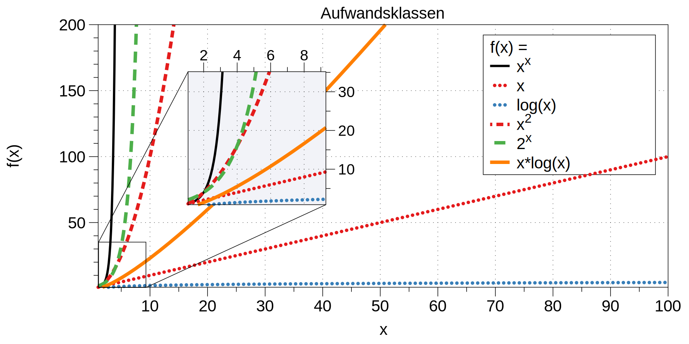

Analyse des Aufwands zur Berechnung von Ergebnissen ist wichtig ...
im Design,
in der Auswahl
und der Verwendung von Algorithmen.
Für relevante Algorithmen und Eingangsdaten können Vorhersagen getroffen werden:
Um Zusammenhänge sind zwischen Eingangsdaten und Aufwand zu finden.
Aufwand kann Rechenzeit, Speicherbedarf oder auch Komponentennutzung sein.
Der Rechenaufwand ist häufig zentral und wird hier betrachtet, die Verfahren sind aber auch für weitere Ressourcen anwendbar.
Die Vorhersagen erfolgen über asymptotische Schätzungen
mit Hilfe der Infinitesimalrechnung,
durch Kategorisierung im Sinne des Wachstumsverhaltens,
damit ist oft keine exakte Vorhersage möglich.
Unterschiedliche Systeme sind unterschiedlich schnell, relativ dazu wird es interessant.
Im Folgenden geht es um:
die Beschreibung des asymptotischen Wachstumsverhaltens
die Analyse von iterativen Algorithmen
die Analyse von rekursiv teilenden Algorithmen
Die Infinitesimalrechnung bezeichnet die Differenzial- und Integralrechnung. Es wird mit unendlich kleinen Größen gerechnet.
Exkursion: Dynamische Programmierung
Der folgende Abschnitt behandelt die dynamische Programmierung, um ein Problem effizient zu lösen. Er zeigt gleichzeitig wie die Wahl des Algorithmus und der Implementierung die Laufzeit dramatisch beeinflussen kann.
Übung
Berechnung der Fibonacci-Zahlen
Implementieren Sie eine rekursive Funktion, die die \(n\)-te Fibonacci-Zahl berechnet!
Bis zu welchem \(n\) können Sie die Fibonacci-Zahlen in vernünftiger Zeit berechnen (d. h. < 10 Sekunden) ?
Bestimmung einer Menge \(T\), die alle Teilprobleme von \(P\) enthält, auf die bei der Lösung von \(P\) – auch in tieferen Rekursionsstufen – zurückgegriffen wird.
Bestimmung einer Reihenfolge \(T_0 , \ldots, T_k\) der Probleme in \(T\), so dass bei der Lösung von \(T_i\) nur auf Probleme \(T_j\) mit \(j < i\) zurückgegriffen wird.
Sukzessive Berechnung und Speicherung von Lösungen für \(T_0 ,...,T_k\).
Beispiel: Berechnung der Fibonacci-Zahlen mit dynamischer Programmierung
Rekursive Definition der Fibonacci-Zahlen nach gegebener Gleichung.
\(T = { f(0),..., f(n-1)}\)
\(T_i = f(i), i = 0,...,n – 1\)
Berechnung von \(fib(i)\) benötigt von den früheren Problemen nur die zwei letzten Teillösungen \(fib(i – 1)\) und \(fib(i – 2)\) für \(i \geq 2\).
Lösung mit linearer Laufzeit und konstantem Speicherbedarf
Beispiel: (\(b_n\)) : \(b_n = n^2\) für \(n \in~\mathbb{N}\)
Eine rekursive Definition ist eine Definition, die sich auf sich selbst bezieht. Häufiger schwieriger zu analysieren. Die explizite Definition ist eine direkte Zuweisung und meist die beste Wahl.
Folgen und Laufzeiten
Die explizite Definition von Laufzeiten ist zur Auswertung vorzuziehen.
Die rekursive Definition tritt oft bei rekursiven Verfahren auf, und sollte dann in eine explizite Definition umgerechnet werden.
Berechnung der Anzahl der Schritte zum Lösen der Türme von Hanoi.
Türme von Hanoi mit 3 Scheiben.
Die Türme von Hanoi (ChatGPT)
Die Türme von Hanoi sind ein klassisches mathematisches Puzzle. Es besteht aus drei Stäben und einer bestimmten Anzahl von unterschiedlich großen Scheiben, die anfangs alle in absteigender Reihenfolge auf einem Stab gestapelt sind – der größte unten und der kleinste oben.
Das Ziel des Spiels ist es, alle Scheiben auf einen anderen Stab zu bewegen, wobei folgende Regeln gelten:
Es darf immer nur eine Scheibe auf einmal bewegt werden.
Eine größere Scheibe darf nie auf einer kleineren liegen.
Alle Scheiben müssen auf den dritten Stab bewegt werden, indem sie über den mittleren Stab verschoben werden.
Laufzeit der Lösung der Türme von Hanoi
Für die Lösung sind für jeden Ring \(n\) die folgenden \(a_n\) Schritte erforderlich:
Alle \(n-1\) kleineren Ringe über Ring \(n\) müssen mit \(a_{n-1}\) Schritten auf den Hilfsstab.
Der Ring \(n\) kommt auf den Zielstab mit einem Schritt.
Alle \(n-1\) Ringe vom Hilfsstab müssen mit \(a_{n-1}\) Schritten auf den Zielstab.
Bei nur einem Ring ist \(a_1 = 1\) und sonst \(a_n = a_{n-1} + 1+ a_{n-1} = 2a_{n-1} + 1\).
Die Folge konvergiert gegen 0, da der Zähler gegen 0 strebt (\(\lim_{{n \to \infty}} {( 1/n)} = 0\) und \(\lim_{{n \to \infty}} {( 1/n^3)} = 0\)) und der Nenner konstant ist.
Die allgemeine Vorgehensweise ist es, die größte Potenz im Zähler und Nenner zu finden und dann diese auszuklammern. Im zweiten Schritt kürzen wir dann. In diesem Fall ist es \(n^3\).
D. h. das Ziel ist es den Ausdruck so umzuformen, dass der Grenzwert direkt abgelesen werden kann. Dies ist inbesondere dann der Fall, wenn \(n\) nur noch im Nenner oder Zähler steht.
Analyse des asymptotischen Verhaltens
Wir möchten \(f(x) = \frac{\ln(x)}{x^{2/3}}\) für \(x \to \infty\) untersuchen.
Die Regel von L'Hôpital ermöglicht es Grenzwerte von Ausdrücken des Typs \(\frac{0}{0}\) oder \(\frac{\infty}{\infty}\) zu berechnen. In diesem Fall nehmen wir die Ableitungen des Zählers und des Nenners.
Die Regel besagt:
Falls \(\lim_{x \to a} \frac{f(x)}{g(x)}\) den unbestimmten Ausdruck \(\frac{0}{0}\) oder \(\frac{\infty}{\infty}\) ergibt, dann gilt:
Wenn eine Funktion \(f\) in der Menge \(O(g)\) (d. h. \(f \in O(g)\)) ist, dann wächst die Funktion \(g\) schneller als die Funktion \(f\). Typischerweise ist der Grenzwert von \(f(n)/g(n)\) für \(n \to \infty\) in diesem Falle 0.
Die Verwendung der O-Notation zur Beschreibung der Komplexität von Algorithmen wurde von Donald
E. Knuth eingeführt.
Alternative Schreibweisen
Insbesondere für die obere Abschätzung \(O(g)\) gibt es eine alternative Schreibweise:
\begin{equation*}
f(n) \in O(g(n)) \Leftrightarrow \exists c_0, n_0 \forall n : n > n_0 \Rightarrow f (n) \leq c_0· g(n)
\end{equation*}
D. h. ab einem Wert \(n_0\) liegt die Komplexität der Funktion \(f\) unter der \(c_0\)-fachen Komplexität der Funktion \(g\).
Wähle: \(c_0 = 5\) und \(n_0 = 7\) sowie \(g(n) = n\).
Verstehen von Aufwandsklassen

Häufige Vergleichsfunktionen sind zum Beispiel Monome wie \(n^k\) für \(k \in \mathbb{N}_0\).
Achtung bei asymptotischen Abschätzungen
Asymptotische Laufzeitabschätzungen können zu Missverständnissen führen:
Asymptotische Abschätzungen werden nur für steigende Problemgrößen genauer, für kleine Problemstellungen liegt oft eine ganz andere Situation vor.
Asymptotisch nach oben abschätzende Aussagen mit \(O(g)\)-Notation können die tatsächliche Laufzeit beliebig hoch überschätzen, auch wenn möglichst scharfe Abschätzungen erwünscht sein sollten, gibt es diese teilweise nicht in beliebiger Genauigkeit, oder sind nicht praktikabel.
Nur Abschätzungen von gleicher Ordnung \(\Theta (g)\) können direkt verglichen werden, oder wenn zusätzlich zu \(O(g)\) auch \(\Omega (h)\) Abschätzungen vorliegen.
Übung
Gegenseitige asymptotische Abschätzung I
Bestimmen Sie welche Funktionen sich gegenseitig asymptotisch abschätzen:
Anzahl der Eingabewerte: \(f(x_1, x_2, . . . , x_n)\)
Aufwand - Übersicht
Algorithmen - Zeitaufwand
Tatsächlicher Zeitaufwand hängt vom ausführenden Rechnersystem ab.
Beeindruckende Entwicklung der Rechentechnik.
Größere Probleme können gelöst werden.
Langsamere Algorithmen bleiben langsamer auch auf schnellen Systemen.
Eine möglichst sinnvolle Annahme eines Rechnersystems gesucht:
Von-Neumann System
mit einer Recheneinheit
genaue Geschwindigkeit nicht relevant.
Die Komplexität eines Problems zu bestimmen ist oft ausgesprochen schwierig, da man hierfür den besten Algorithmus kennen muss. Es stellt sich dann weiterhin die Frage wie man beweist, dass der beste Algorithmus vorliegt.
Bei vielen Komplexitätsanalysen steht die Zeitkomplexität im Vordergrund.
Die Zeitkomplexität misst nicht konkrete Ausführungszeiten (z. B. 1456 ms), da die Ausführungszeit von sehr vielen Randbedingungen abhängig ist, die direkt nichts mit demAlgorithmus zu tun haben, z. B.:
Prozessortyp und Taktfrequenz
Größe des Hauptspeichers
Zugriffszeiten der Peripheriegeräte
Betriebssystem → wird z. B. ein virtueller Speicher unterstützt
Compiler- oder Interpreter-Version
Systemlast zum Zeitpunkt der Ausführung
Wichtige Komplexitätsklassen
Klasse
Eigenschaft
\(O(1)\)
Die Rechenzeit ist unabhängig von der Problemgröße
\(O(\log n)\)
Die Rechenzeit wächst logarithmisch (zur Basis 2) mit der Problemgröße
\(O(n)\)
Die Rechenzeit wächst linear mit der Problemgröße
\(O(n \cdot \log n)\)
Die Rechenzeit wächst linear logarithmisch mit der Problemgröße
\(O(n^2)\)
Die Rechenzeit wächst quadratisch mit der Problemgröße
\(O(n^3)\)
Die Rechenzeit wächst kubisch mit der Problemgröße
\(O(2^n)\)
Die Rechenzeit wächst exponentiell (zur Basis 2) mit der Problemgröße
\(O(n!)\)
Die Rechenzeit wächst entsprechend der Fakultätsfunktion mit der Problemgröße
Komplexität und bekannte Algorithmen/Probleme
\(O(1)\)
Liegt typischerweise dann vor, wenn das Programm nur einmal linear durchlaufen wird.
Es liegt keine Abhängigkeit von der Problemgröße vor, d. h. beispielsweise keine Schleifen in Abhängigkeit von \(n\).
Beispiel:
Die Position eines Datensatzes auf einem Datenträger kann mit konstanten Aufwand berechnet werden.
\(O(\log n)\)
Beispiel:
Binäre Suche; d. h. in einem sortierten Array mit \(n\) Zahlen eine Zahl suchen.
\(O(n)\)
Beispiel:
Invertieren eines Bildes oder sequentielle Suche in einem unsortierten Array.
\(O(n \cdot \log n)\)
Beispiel:
Bessere Sortierverfahren wie z. B. Quicksort.
\(O(n^2)\)
Häufig bei zwei ineinander geschachtelten Schleifen.
Beispiel:
Einfache Sortierverfahren wie z. B. Bubble-Sort oder die Matrixaddition.
\(O(n^3)\)
Häufig bei drei ineinander geschachtelten Schleifen.
Beispiel:
Die Matrixmultiplikation.
\(M(m, t)\) ist eine Matrix mit m Zeilen und t Spalten.
Typischerweise der Fall, wenn für eine Menge mit n Elementen alle Teilmengen berechnet und verarbeitet werden müssen.
Beispiel:
Rucksackproblem (Knapsack Problem)
Ein Rucksack besitzt eine maximale Tragfähigkeit und \(n\) Gegenstände unterschiedlichen Gewichts liegen vor, deren Gesamtgewicht über der Tragfähigkeit des Rucksacks liegt. Ziel ist es jetzt eine Teilmenge von Gegenständen zu finden, so dass der Rucksack optimal gefüllt wird.
\(O(n!)\)
Typischerweise der Fall, wenn für eine Menge von \(n\) Elementen alle Permutationen dieser Elemente zu berechnen und zu verarbeiten sind.
Beispiel:
Problem des Handlungsreisenden (Traveling Salesman Problem (TSP))
Gegeben sind \(n\) Städte, die alle durch Straßen direkt miteinander verbunden sind und für jede Direktverbindung ist deren Länge bekannt.
Gesucht ist die kürzeste Rundreise, bei der jede Stadt genau einmal besucht wird.
Approximation von Laufzeiten
Sei die Problemgröße \(n = 128\):
Klasse
Laufzeit
\(O(\log_2\, n)\)
\(1,75\,ns\)
\(O(n)\)
\(32\,ns\)
\(O(n \cdot \log_2\, n)\)
\(224\,ns\)
\(O(n^2)\)
\(4,096\,µs\)
\(O(n^3)\)
\(524,288\,µs\)
\(O(2^n)\)
\(2,70 \cdot 10^{21}\,a\)
\(O(3^n)\)
\(9,35 \cdot 10^{43}\,a\)
\(O(n!)\)
\(3,06 \cdot 10^{198}\,a\)
Dies zeigt, dass Algorithmen mit einer Komplexität von \(O(n^3)\) oder höher für große bzw. nicht-triviale Problemgrößen nicht praktikabel sind.
Iterative Algorithmen
Elementare Kosten als Approximation
Elementare Operation
Anzahl der Rechenschritte
elementare Arithmetik: + ,- , * , /, etc.
1
elementare logische Operationen: &&, ||, !, etc.
1
Ein- und Ausgabe
1
Wertzuweisung
1
return, break, continue
1
Kontrollstrukturen
Anzahl der Rechenschritte
Methodenaufruf
1 + Komplexität der Methode
Fallunterscheidung
Komplexität des logischen Ausdrucks + Maximum der Komplexität der Rechenschritte der Zweige
Schleife
Annahme: \(m\) Durchläufe:
Komplexität der Initialisierung + \(m\) mal die Komplexität des
Schleifenkörpers + Komplexität aller Schleifenfortschaltungen
Beispiel Primzahltest: Analyse mit elementaren Kosten
Im schlechtesten Fall, d. h. es gilt \(i==n\) nach der while-Schleife, werden \(7 + (n- 2)· 7 = 7· n- 7\) Rechenschritte benötigt. Die Anzahl der Rechenschritte hängt somit linear vom Eingabewert \(n\) ab.
Beachte, dass in keinem Falle alle Instruktionen ausgeführt werden.
Beispiel Insertion-Sort: Analyse mit abstrahierten Kosten
Insertion-Sort
Vergleichbar zum Ziehen von Karten: die neue Karte wird an der richtigen Stelle eingeschoben.
Der Insertion-Sort-Algorithmus hat eine quadratische Komplexität, d. h. die Laufzeit wächst quadratisch mit der Problemgröße. Er hat die Komplexität \(O(n^2)\).
Übung
Bestimmung der asymptotischen Laufzeit eines Algorithmus
Die Funktion \(p(n)\) hat die Laufzeit \(T_p(n) = c_p \cdot n^2\) und \(q(n)\) die Laufzeit \(T_q(n) = c_q \cdot \log(n)\).
1 AlgorithmusCOMPUTE(n)2 p(n);3 forj=1...ndo4 fork=1...jdo5 q(n);6 end7 end
Bestimmen Sie die asymptotische Laufzeit des Algorithmus in Abhängigkeit von \(n\) durch zeilenweise Analyse.
Bestimmen Sie die algorithmische asymptotische Komplexität des folgenden Algorithmus durch Analyse jeder einzelnen Zeile. Jede Zeile kann für sich mit konstantem Zeitaufwand abgeschätzt werden. Bestimmen Sie die Laufzeitkomplexität für den schlimmstmöglichen Fall in Abhängigkeit von \(k\) für eine nicht-negative Ganzzahl \(n\) mit \(k\) Bits.
(Beispiel: die Zahl \(n = 7_d\) benötigt drei Bits \(n= 111_b\), die Zahl \(4d\) benötigt zwar auch drei Bits \(100_b\) aber dennoch weniger Rechenschritte.).
Bestimmen Sie die algorithmische asymptotische Komplexität des folgenden Algorithmus durch Analyse jeder einzelnen Zeile. Jede Zeile kann für sich mit konstantem Zeitaufwand abgeschätzt werden.
Bestimmen Sie die Laufzeitkomplexität mit Indikator \(t_i\) für gesetzte Bits in \(n\) für den schlimmstmöglichen Fall in Abhängigkeit von \(k\) für eine nicht-negative Ganzzahl \(n\) mit \(k\) Bits.
(D. h. \(t_i = 1\), wenn der i-te Bit von \(n\) gesetzt ist, sonst ist \(t_i = 0\); sei \(n = 5_d = 101_b\) dann ist \(t_1 = 1, t_2 = 0, t_3 = 1\)).
Standardverfahren zur Analyse rekursiver Algorithmen:
Anwendung der Verfahren zur Analyse iterativer Algorithmen um die Rekurrenzgleichung zu bestimmen.
Eine Anzahl von Werten ausrechnen und auf sinnvollen Zusammenhang schließen.
Beweis des Zusammenhangs mit vollständiger Induktion.
Dieses Verfahren haben wir bei den Türmen von Hanoi angewandt.
Beobachtung bzgl. rekursiv teilender Algorithmen
Teilende Verfahren, bzw. Divide-and-Conquer-Algorithmen, sind typischerweise sehr effizient.
Wird beispielsweise das Problem immer halbiert, ist also \(a_{2n} = a_n + 1\) und ist \(a_1 = 1\), dann würde für die Folgenglieder gelten \(a_1 = 1, a_2 = 2, a_4 = 3, a_8 = 4, a_{16} = 5, ...\).
Ein Beispiel ist binäre Suche nach einem Namen im Telefonbuch oder nach einer zu erratenden Zahl.
Bei der Herleitung wurde (wieder) vollständige Induktion angewandt und die Logarithmusgesetze genutzt: \(\log(a) + \log(b) = \log(a \cdot b)\) sowie \(\log_bb= 1\).
Rekurrenz-Gleichung für rekursiv teilende Algorithmen
In vielen Fällen geben rekursiv teilende Algorithmen Grund zur Hoffnung, dass die Laufzeit einen relevanten logarithmischen Anteil hat.
Häufig können die Rekurrenz-Gleichungen rekursiv teilender Algorithmen in folgende Form gebracht werden:
Sei:
\(a\): die Anzahl der rekursiven Aufrufe,
\({n \over b}\): die Größe jedes rekursiven Unterproblems wobei \(b\) die Anzahl der Teile ist in die das Problem geteilt wird,
In diesem Fall können drei Fälle unterschieden identifiziert werden:
Ist der Aufwand \(f(n)\) vernachlässigbar gegenüber dem Aufwand der weiteren Aufrufe, so ist ein rein durch die Rekursion bestimmtes Verhalten zu erwarten.
Entspricht der Aufwand \(f (n)\) genau dem Aufwand der weiteren Aufrufe, so vervielfältigt sich der Aufwand gegenüber dem 1. Fall, bleibt aber in der gleichen Größenordnung.
Ist der Aufwand \(f (n)\) größer als der Aufwand der verbleibenden Aufrufe, so wird der Aufwand asymptotisch von \(f (n)\) dominiert.
Beispiel für den 1. Fall
Bei \(a = 1\) und \(b= 2\) — wie bei der binären Suche — ist somit logarithmisches Verhalten zu erwarten. Wird hingegen ein \(b= 2\) halbiertes Feld \(a = 4\) viermal aufgerufen, so ist ein quadratisches Verhalten zu erwarten.
Lösen von Rekurrenzgleichungen mit dem Master-Theorem
Das Master-Theorem ist ein Werkzeug zur Analyse der Zeitkomplexität von rekursiven Algorithmen, die mit Hilfe von Rekurrenzgleichungen der Form \(T(n) = a \cdot T\left({n \over b}\right) + f(n)\) beschrieben werden können.
Anwendungsgebiet sind insbesondere Teile-und-Herrsche Algorithmen.
Das Master-Theorem hat drei Fälle, die auf dem Vergleich zwischen \(f(n)\) und \(n^{\log_b a}\) basieren und die asymptotische Komplexität von \(T(n)\) bestimmen. Wobei \(n^{\log_b a}\) die Laufzeit für die Rekursion selbst beschreibt:
Seien \(a >0\) und \(b >1\) Konstanten und \(f : \mathbb{N} \rightarrow \mathbb{N}\):
Wenn \(f(n) \in O(n^{\log_b a - \epsilon})\) für ein \(\epsilon > 0\) gilt – d. h. wenn \(f(n)\) langsamer wächst als \(n^{\log_b a}\) – dann dominiert die Rekursion, und es gilt: \(T(n) \in \Theta(n^{\log_b a})\).
Wenn \(f(n) \in \Theta(n^{\log_b a} \cdot (\log n)^k)\) für ein \(k \geq 0\) gilt – d. h. wenn \(f(n)\) und \(n^{\log_b a} \cdot (\log n)^k\) gleich schnell wachsen – dann tragen beide Teile zur Gesamtkomplexität bei, und es gilt: \(T(n) \in \Theta(n^{\log_b a} \cdot (\log n)^{k+1})\).
Wenn \(f(n) \in \Omega(n^{\log_b a + \epsilon})\) für ein \(\epsilon > 0\) gilt und weiterhin gilt \(af(n/b) \leq c f(n)\) für eine Konstante \(c < 1\) und ein hinreichend großes \(n\) – d. h. wenn also \(f(n)\) schneller wächst als \(n^{\log_b a}\) – dann dominiert \(f(n)\) die Komplexität, und es gilt: \(T(n) \in \Theta(f(n))\).
Viele Sortieralgorithmen sind zum Beispiel Teile-und-Herrsche Algorithmen.
Im Mastertheorem erfolgt der Vergleich ggf. mit \(n^{(\log_ba)\pm\epsilon}\) und nicht mit \(n^{\log_b (a\pm\epsilon)}\).
Anwendung des Master-Theorems: 1. Beispiel
Gegeben sei:
\(T (n) = 2T (n/2) + n \log_2 n\)
Somit gilt:
\(a = 2\), \(b = 2\) und \(n^{\log_2 2} = n\)
Analyse:
Es liegt Fall 2 vor, da \(f(n) = n \cdot (\log_2n)^{k=1} \in \Theta(n^{\log_b a} \cdot (\log n))\).
Ergebnis:
Die Laufzeit beträgt somit \(T(n) = \Theta(n \cdot (\log_2 n)^2)\).
Der Wechsel der Basis des Logarithmus ist möglich, da sich die Basis nur um einen konstanten Faktor unterscheidet:
Es liegt Fall 3 vor, da \(f(n) = 2n \in \Omega(n^{\log_3 2 + \epsilon})\) und
\(af(n/b) = 2n/3 \leq c \cdot n\) für \(1 > c \geq 2/3\).
Ergebnis:
Die Laufzeit beträgt somit \(T(n) = \Theta(n)\).
Master-Theorem: Zusammenfassung
Das Master-Theorem hilft also, die asymptotische Komplexität von Algorithmen schnell zu bestimmen, ohne dass eine detaillierte Analyse der Rekurrenz erforderlich ist.
Übung
f(n) ist konstant
Gegeben sei: \(T (n) = 2T (n/4) + 1\)
Bestimmen Sie die Laufzeit des Algorithmus mit Hilfe des Master-Theorems.
Der Mergesort-Algorithmus ist ein rekursiver Algorithmus, der ein Array in zwei Hälften teilt, die Hälften sortiert – wenn sie nicht trivial sind – und dann die sortierten Hälften zusammenführt. Das Zusammenführen der Hälften hat einen Aufwand von \(n\) und das Teilen des Arrays hat einen konstanten Aufwand.
Bestimmen Sie die Rekurrenzgleichung für den Mergesort-Algorithmus.
Bestimmen Sie die Laufzeit des Mergesort-Algorithmus mit Hilfe des Master-Theorems.